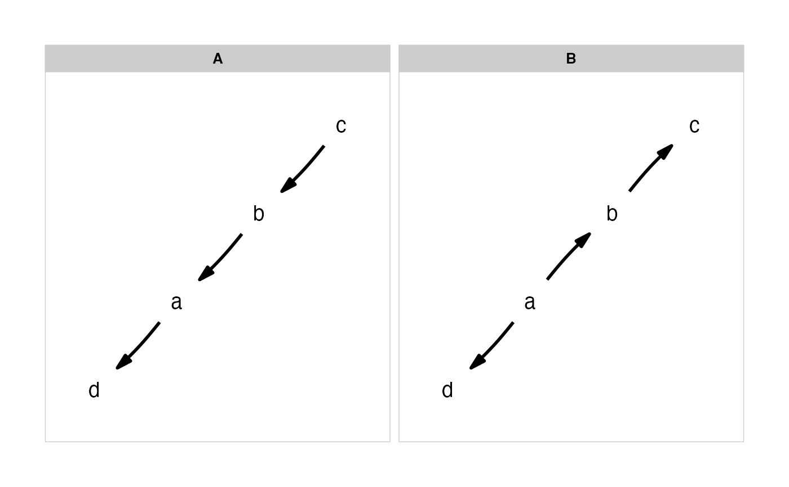

This is a convenience function to quickly and clearly define a set of causal
models. Supply a list of formulas for each model, using either c(). Formulas
should be of the form child ~ parent and describe each path in your model.
Multiple children of a single parent can be combined into a single formula:
child ~ parent1 + parent2.
Details
This function uses ggm::DAG().
Examples
(m <- define_model_set(
A = c(a~b, b~c),
B = c(b~a, c~b),
.common = c(d~a)))
#> $A
#> c b a d
#> c 0 1 0 0
#> b 0 0 1 0
#> a 0 0 0 1
#> d 0 0 0 0
#> attr(,"class")
#> [1] "matrix" "array" "DAG"
#>
#> $B
#> a d b c
#> a 0 1 1 0
#> d 0 0 0 0
#> b 0 0 0 1
#> c 0 0 0 0
#> attr(,"class")
#> [1] "matrix" "array" "DAG"
#>
plot_model_set(m)
